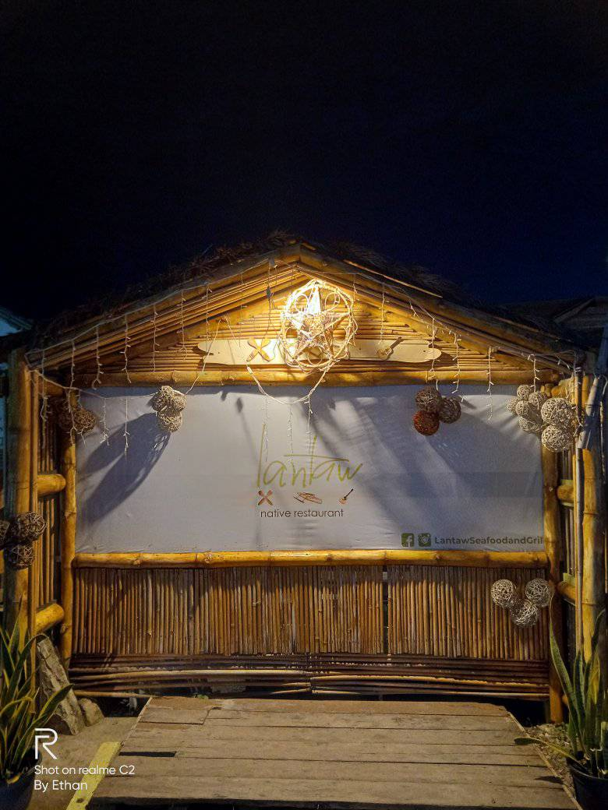

Lantaw Restaurant in Cordova, Cebu: A Gastronomic Escape with Breathtaking Views
Located in the town of Cordova, Cebu, the Lantaw Restaurant is a hidden gem that will take your dining experience to new heights. this establishment offers not only mouthwatering dishes but also panoramic views of the shimmering sea and surrounding islands. Whether you are a local or a tourist, Lantaw Restaurant promises an extraordinary culinary journey that will delight your senses. You will be enthralled with the restaurant's welcoming environment and rustic appeal as soon as you walk in. The comfortable bamboo furnishings and traditional-inspired décor add to Lantaw's intimate and inviting atmosphere. But this restaurant's amazing outside terrace is what really makes it unique. Situated on a hill, it provides a clear perspective of the neighboring islands, rendering it an ideal location for an intimate meal or just some quiet reflection. Lantaw Restaurant in Cordova, Cebu, is the ideal alternative for people looking for not only a gastronomic adventure but also an escape from the rush and bustle of everyday life. Lantaw provides an experience that goes beyond a meal with its excellent menu, fascinating environment, and spectacular vistas. Prepare to be enchanted by nature's calm beauty while immersed in culinary delights—a truly unique experience for all.